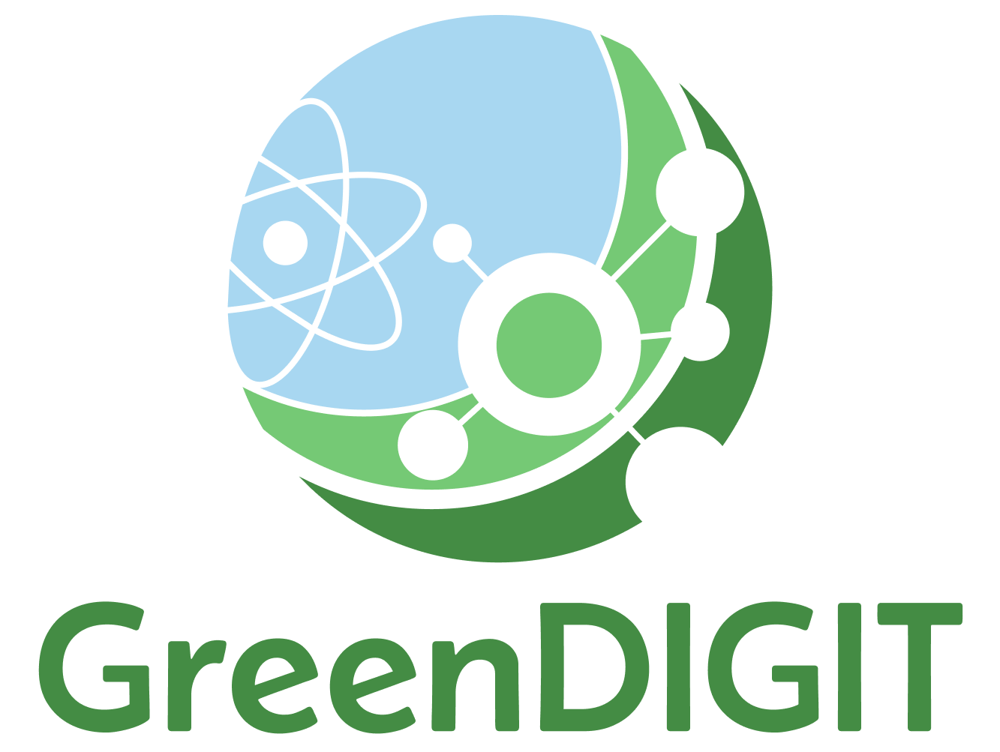

Login
Use the existing token login page to generate an API token or continue to the dashboards.

EIMPS provides a common pipeline for collecting, harmonising, enriching, and publishing environmental impact metrics from distributed research infrastructures. The platform supports secure metric submission, KPI enrichment, and dashboard-based exploration of aggregated sustainability indicators.
Use the existing token login page to generate an API token or continue to the dashboards.
EGI Federation Registry access requests are temporarily unavailable from this page.
Temporarily unavailableEGI Check-in / OIDC login is temporarily unavailable from this entry point.
KPI API documentation, main reference for KPI submission and retrieval.
CIM API documentation, main reference for CIM metrics submission.
Source code repository for the CIM and KPI pipeline.
This work is funded from the European Union's Horizon Europe research and innovation programme through the GreenDIGIT project, under Grant Agreement No. 101131207.